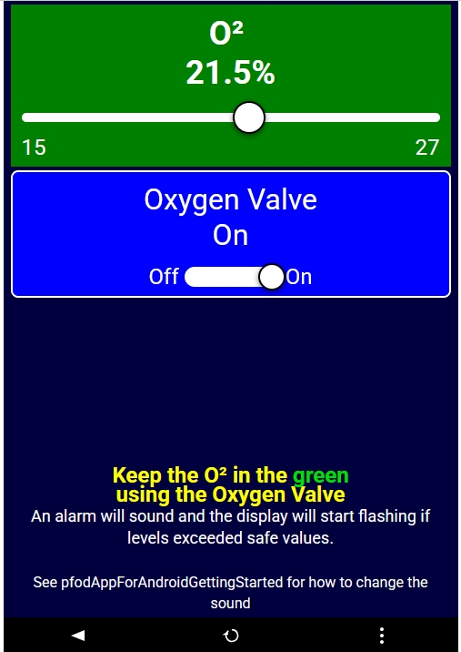

Putting a phone or PC interface in front of an Arduino-class device usually means picking a
remote-control tool — and they take very different approaches: cloud dashboards, drag-and-drop
GUI builders, self-hosted automation hubs, or protocols where the device itself defines the UI.
pfodWeb belongs to that last category: a browser-based client where the
microcontroller emits the entire UI at runtime, no dashboard to build,
and no cloud account.
This document surveys the main alternatives, groups them by how they work,
compares them feature-by-feature against pfodWeb, and ends with a decision guide for choosing
the right tool for a given project.
| Tool | Transport | UI built where | Cloud needed |
|---|---|---|---|
| pfodApp (native Android) | BT, BLE, WiFi/TCP, SMS | On the device, at runtime | No |
| pfodWeb (browser) | HTTP and Serial, BT/BLE, TCP/IP via pfodProxy | On the device, at runtime | No |
Both these are supported by designers (pfodDesigner
and pfodWeb designer)
that let you build the menu / display and specify the board pins to control and then generate complete Arduino sketches.
Below are some example pfodWeb screens:-
Europa Ice Sampling Prototype
, an example slider display and on/off button, from the demoScreen sketch, and a home
Weather Station, a more advanced drawing menu item.



| Capability | pfodWeb | Blynk IoT | RemoteXY | Virtuino | Arduino Cloud | Bluetooth Electronics | ESPHome (+ Home Assistant) | Node-RED (Dashboard) | ArduinoStudio | LVGL | Electric UI |
|---|---|---|---|---|---|---|---|---|---|---|---|
| No app install (runs in browser) | yes — for any browser since 2017 | no — app/web cloud | no — app | no — app | partial — web + app | no — Android only | partial — browser via HA server | yes — browser dashboard (server required) | yes — browser (Web Serial) | partial — LVGLRemoteServer and Emscripten builds can run in a browser; wired display is primary mode | no — Electron desktop app (Win/Mac/Linux); not browser-based |
| Needs Dashboard/App to code | partial — designer is convient, but can edit sketch directly | yes — build dashboard | yes — build + regen code | yes — build panels | yes — build things/vars | yes — build panel | partial — YAML config, dashboards built | yes — build flows + dashboard | yes — build logic + UI (no-code) | yes — C/C++ code or SquareLine Studio; remote paths require additional DIY server code | yes — build the UI yourself in React/JS |
| Change UI = just edit the sketch | yes — instant | no — edit dashboard too | no — regenerate | no — re-edit panel | no — edit variables | no — re-edit panel | partial — edit YAML, entities auto-add | no — UI separate from firmware | no — board runs stock Firmata; logic+UI built in app | yes — recompile firmware | no — UI is a separate React app, edited independently of the firmware |
| Works fully offline / no account | yes | no — cloud login | partial — local modes | yes — local modes | no | yes | yes | yes | no — account/hosted SaaS | yes — fully local (wired display or LAN via LVGLRemoteServer) | yes — core framework runs fully local/offline; optional paid Cloud tier needs an account |
| No third-party server (privacy/longevity) | yes | no | partial | yes — local | no | yes | partial — needs self-hosted HA server | partial — needs self-hosted Node-RED server | no — hosted SaaS | yes — no cloud; remote paths are DIY/self-hosted | yes — local app; optional paid Cloud tier for remote access |
| Multiple transports, one client | yes — HTTP/Serial/BLE/BT/TCP | partial — WiFi/BLE via cloud | yes — BT/BLE/WiFi/cloud | yes — BT/WiFi/MQTT | partial — WiFi/cellular/LoRa | no — BT/BLE only | partial — WiFi/API, BLE proxy | yes — serial/MQTT/TCP/HTTP via nodes | no — USB Firmata only | partial — wired display primary; Wi-Fi via LVGLRemoteServer (UDP) or custom WebSocket/VNC (DIY) | yes — Serial/USB and BLE from one app |
| Served from the device itself (flash-embedded) | yes — pfodWeb.html client can be served from micro | no | no | no | no | no | partial — optional basic built-in web UI | no | no | yes — runs directly on MCU; LVGLRemoteServer also runs on the MCU | no — separate desktop app, not served from the device |
| Hierarchical menus | yes | partial — tabs | partial — pages | partial | partial | no | partial — HA views/tabs | partial — dashboard tabs/groups | no — sequence canvas + panel | yes | yes — build any structure you like in React |
| Interactive touch GUIs | yes | no | no | partial — basic | no | no | no | partial — via template/SVG nodes | no | yes — touchscreen on wired display; remote touch via LVGLRemoteServer or custom WebSocket | yes — full React/Electron UI toolkit |
| Real-time charts + CSV logging/download | yes — freeze/scroll/scale, group/separate, CSV export+reload | partial — cloud SuperChart; free ~1 msg/min, CSV export PLUS/PRO | partial — live graph only, app-side history, no CSV export | partial — charts; logging via separate logger | partial — cloud charts + CSV download (emailed) | partial — rolling plot only, no logging | partial — HA history graphs; CSV via HACS card/Python | partial — chart node; CSV via wired csv/file nodes | not stated | partial — lv_chart widget on-device; no CSV logging/export | partial — built-in real-time plotting; CSV export not confirmed |
| Protocol-level 128-bit auth (no shared cloud) | yes — challenge/response (i) | partial — cloud TLS | partial | partial | partial — cloud | no | yes — encrypted native API | partial — server TLS/auth | no — Firmata, hosted | no — remote paths (UDP/WebSocket/VNC) are unauthenticated by default; DIY to add | not stated |
| Cost | Free | Freemium/paid | Freemium/paid | Free/paid | Freemium/paid | Free | Free | Free | Freemium; UI editor paid ($9/mo+) | Free (MIT); SquareLine Studio free community / paid plans; LVGLRemoteServer free open-source | Free (open-source core); Cloud/enterprise tiers paid |
| Direct Device access from anywhere | yes — for HTTP micro self-hosted | yes | partial — via cloud | partial — MQTT | yes | no | partial — paid Nabu Casa or DIY | no — DIY | partial — shareable link (hosted) | no — LAN only | partial — paid Cloud tier for remote/fleet access |
| Rules/automation/push notifications | no | yes | partial | partial | yes | no | yes — HA automations | yes — core feature | partial — visual sequence logic (no push stated) | partial — device-side code only | no — UI framework only, no built-in automation engine |
| Polished themeable drag and drop widgets | no — relies on code library of interactive GUI elements | yes | yes | yes | yes | yes | yes — HA Lovelace | yes — Dashboard 2.0 | yes — drag-and-drop UI (paid tier) | yes — animated widgets, themes, styles | partial — themeable React component library, code-based not drag-and-drop |
(i) Note pfodApp implements 128bit auth, pfodWeb implementation to come.
| Tool | Minimum board | Notes |
|---|---|---|
| pfodWeb | Uno or higher | USB/Serial: tiny pfod parser runs on almost any board; WiFi (TCP/IP or HTTP) and BLE can be used where the board supports them |
| Blynk IoT | ESP8266 / ESP32 | Needs an IP stack; Uno requires add-on IP capable shield |
| RemoteXY | Uno or higher | USB/serial on a bare Uno; BT needs an add-on module (e.g. HC-05); ESP for WiFi |
| Virtuino | Uno or higher | USB/serial on a bare Uno; BT needs an add-on module (e.g. HC-05); ESP for WiFi/MQTT |
| Arduino Cloud | ESP32 / MKR / Nano 33 IoT / Uno R4 | No classic Uno R3 |
| Bluetooth Electronics | Uno or higher | Requires a BT/BLE module (e.g. HC-05) |
| ESPHome (+ Home Assistant) | ESP8266 / ESP32 | No AVR support |
| Node-RED (Dashboard) | Uno or higher | Device just talks serial/MQTT; logic runs on the Node-RED host |
| ArduinoStudio | Uno or higher | Board runs stock StandardFirmata; ArduinoStudio drives it from the browser over USB serial (Web Serial). Any Firmata-capable board (Uno/Nano/Mega/ESP32…); no on-device WiFi/BLE app |
| LVGL | ESP32 / STM32 / RP2040 / NXP i.MX RT | Minimum ~16 KB RAM, 64 KB flash (practical floor is ESP32-class); wired display primary — requires TFT/OLED/e-paper + optional touchscreen. Remote paths (LVGLRemoteServer, custom WebSocket/VNC) need Wi-Fi so ESP32-class or similar. |
| Electric UI | Any board with USB-Serial or BLE | Firmware side just needs the Electric UI Arduino/C library and a Serial or BLE link; no specific board tier required, since the UI runs on the desktop, not the device |
| Tool | Real-time chart | Freeze / scroll / zoom | Group & separate plots | CSV log / export | Local (no cloud/server) |
|---|---|---|---|---|---|
| pfodWeb | yes — live CSV stream | yes — freeze, X-scroll, halve/double pts, Y min/max | yes — any number, grouped or on separate axes | yes — export & reload any CSV | yes — runs in the browser, no cloud/server |
| Blynk IoT | yes — SuperChart | partial — pan historical ranges | yes — multi-datastream | partial — CSV export needs PLUS/PRO (paid) | no — Blynk Cloud (free ~1 msg/min) |
| RemoteXY | yes — Online Graph (while connected) | no | partial — multiple vars per graph | no — no built-in export | partial — local link but phone-side history only |
| Virtuino | yes — chart/graph element | partial — limited | partial | partial — via separate Virtuino logger | yes — local modes |
| Arduino Cloud | yes — dashboard chart | yes — selectable time range | yes — multi-variable | yes — CSV download (emailed) | no — cloud account / online |
| Cayenne (myDevices) | yes — line-graph widgets | partial — timeframe / custom-range filter | yes — multi-widget dashboard | yes — CSV download (time-range) | no — myDevices cloud / account |
| Thinger.io | yes — time-series widgets | partial — historical / aggregated ranges | yes — multi-widget dashboard | yes — bucket export CSV/JSON/ARFF | yes — self-hosted (open-source) or cloud |
| Bluetooth Electronics | yes — rolling plot | no — fixed rolling window | partial — multiple graph panels | no — no logging/export | yes — local BT/BLE, no cloud |
| ESPHome (+ Home Assistant) | yes — HA history graph | partial — HA time-range zoom | partial — multi-entity cards | partial — via HACS card / Python | yes — self-hosted (no third-party cloud) |
| Node-RED (Dashboard) | yes — ui-chart node | partial — limited interaction | yes — multi-series / charts | partial — DIY csv + file nodes | yes — self-hosted server |
| ArduinoStudio | not stated | not stated | not stated | not stated | no — account/hosted SaaS |
| LVGL | yes — lv_chart widget (line, bar, scatter) | no — fixed canvas; scroll requires custom code | partial — multiple series per chart | no — no storage or export | yes — on-device display, no cloud/server |
| Electric UI | yes — built-in real-time plotting (core feature) | not stated | not stated | not stated | yes — local desktop app; optional paid Cloud tier for remote access |
Only pfodWeb is "yes" across freeze/scroll/zoom and group/separate plots and local CSV logging — the others are cloud-bound, export-limited, or require you to wire/host the logging yourself.
Choose pfodWeb when you want a no-install, no-account, locally-controlled,
instantly-updatable UI that the device itself defines — ideal for direct local control,
privacy-sensitive or air-gapped setups, and avoiding cloud-vendor lock-in/shutdown.
Choose a cloud
platform (Blynk / Arduino Cloud / Cayenne) when remote-from-anywhere access,
automation rules, push alerts, and managed fleets matter more than locality and self-sufficiency.
RemoteXY/Virtuino/Bluetooth Electronics sit in between — local-capable but you
still hand-build and maintain the GUI separately from the firmware.
Electric UI sits at the developer end of that same spectrum — no drag-and-drop,
no device-defined UI; you code a custom desktop app (React) and the firmware-side comms yourself,
in exchange for full control and built-in real-time plotting.
| Your priority / scenario | Best fit | Why |
|---|---|---|
| Uno, Mega, or other low-memory boards | pfodWeb / pfodApp / RemoteXY / Virtuino | pfodWeb/pfodApp and RemoteXY/Virtuino run on bare AVR over USB-serial or BT module; cloud platforms (Blynk IoT, Arduino Cloud, ESPHome) and LVGL all require ESP32-class hardware |
| Wide OS / Browser support for All transports, Serial, BLE, TCP/IP, HTTP | pfodWeb | Windows, MacOS (Intel/Apple), Linux OS's and
Chrome/Chromium, FireFox, Safari, Edge browsers from 2017 onwards Android 8+ (2017) for pfodApp |
| No app to install, no separate UI keep in sync, change the sketch and the UI just updates | pfodWeb | Device emits the UI live; runs in any browser |
| Air-gapped / private / no cloud / no account, fully local control | pfodWeb | Local request/response, no third-party server |
| UI must be served by the device itself with nothing else installed | pfodWeb | pfodWeb.html served from micro's firmware |
| One client across HTTP, USB-serial, BLE, BT and TCP | pfodWeb | Single browser page on all browsers since 2017, all transports |
| Real-time charting with interactive freeze / scroll / zoom, grouped or separate plots, and local CSV logging — no cloud | pfodWeb | Built-in charting: freeze + zoom + group/separate, export & reload CSV locally; the others are cloud-bound, export-limited or DIY-wired |
| Polished native phone dashboard, control from anywhere over the internet, zero networking setup | Blynk IoT / Arduino Cloud | Managed cloud, remote access, push alerts out of the box |
| Cloud rules engine, alerting, multi-device fleet management | Blynk / Arduino Cloud / Cayenne | Built-in automation, notifications, provisioning |
| Hand-built local panel, no cloud, willing to maintain a separate GUI | RemoteXY / Virtuino / Bluetooth Electronics | Local BT/BLE/WiFi panels, free/cheap, simple widgets |
| Already on ESP32/ESP8266 + Home Assistant, want automations and a themed dashboard, local-first | ESPHome + Home Assistant | Encrypted local API, HA automations & Lovelace UI (self-hosted server) |
| Heavy data wrangling, protocol bridging, custom logic between device and UI | Node-RED (Dashboard) | Flow-based glue, many transports, charts/CSV, scriptable automation |
| Maximum UI polish/customisation and you don't mind building it | Blynk / ESPHome+HA / Node-RED / LVGL | Themeable widget galleries and rich animated widgets (at the cost of build + maintain effort); LVGL gives the most polished on-device |
| Browser no-code: build the control LOGIC and a custom panel, share it as a link | ArduinoStudio | Firmata host-driven visual builder (board is a stock-Firmata I/O slave); you build/own the logic+UI in a hosted account (UI editor is a paid $9/mo+ tier) — the inverse of pfodWeb's free, local, device-defined model |
| Rich on-device GUI; wired display primary, optional Wi-Fi remote view/control via LVGLRemoteServer or custom WebSocket/VNC (all DIY) | LVGL | On-device display library; rich animated widgets and touchscreen support; UI coded in C/C++ or built with SquareLine Studio; remote paths are community/DIY, not built-in |
| Willing to code a fully custom desktop control app (React/JS), want built-in real-time plotting, don't need the device to define the UI | Electric UI | Open-source dev framework, not a no-code tool; you own the UI code and the firmware-side comms; Serial/BLE in one app; optional paid Cloud tier for remote/fleet access |
Quick rule of thumb: